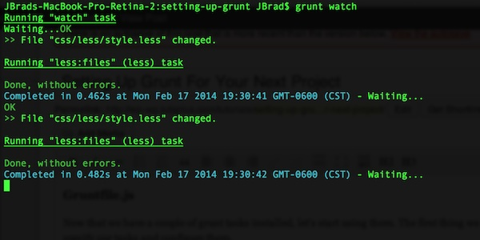
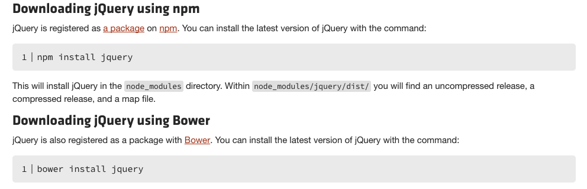
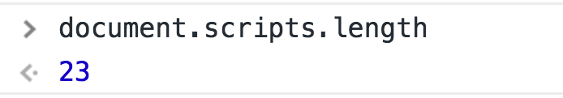
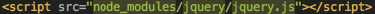
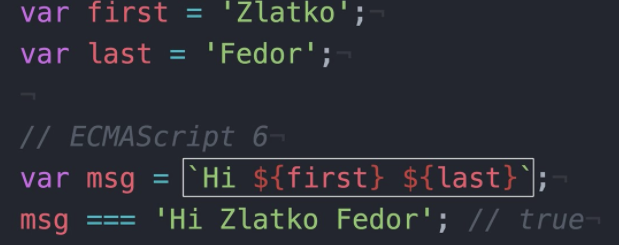
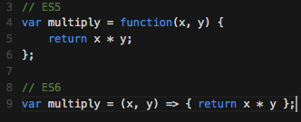

Modern Tooling
&
React Intro
I'm Ursu Alexandr
Front End Development
- Arobs Software
- PaddyPower & Betfair
- 3 Screen Solutions (Red Bull)
I Love
- Front End Development
- Tooling
- Business
- 🍺 Beer
These slides will be available soon
Let's talk about irrigation
- traditional
- time consuming
- hard work
- cheap
- repeated work
Modern irrigation
- expensive
- much faster
- more efficient
- automated
- you're free to do another things
Sometimes people are blind to benefits
or very poor :)
Web development is exactly the same way!
😡 I was angry! But now I cannot work without them
- there are too many!
- what should I use?
- do not have time to keep up to date
ok agree, but I'm confused!
For that reason, we are going to clarify things here, I hope by the end of presentation you will take few tools to improve your workflow
Before start, let's be smart, and use only if it is needed!
- huge projects
- create once for starter files
- multiple color themes
- greater efficiency (reload)
- optimisation
Build tools!
- 500 +
-
 Grunt
Grunt -
 Gulp
Gulp -
 NPM
NPM -
 Webpack
Webpack
What are they for?
- Compiling SASS/LESS etc. (main reason)
- Concatenating
- Minification
- Image Optimization
- Maintain code clean
- Does your site loads 8 seconds?
- Live reload
- etc.
How do we use them?
- 1. node.js installed
- 2. all of them use a command-line interface to run custom tasks defined in a file
- 3. always runs in background 
Do you use SASS/LESS?
-
Nested syntax
-
Ability to define variables
-
Ability to define mixins
-
Mathematical functions
-
Joining of multiple files
Grunt
- Based on plugins
Gulp
- Based on plugins
NPM
- Based on CLI
- SCRIPTS
Webpack
- more like Grunt & Gulp, but more complex
- it's hard to learn
- very common in React & Angular community
What should I use then!?
Whatever works better for you!
Grunt & Gulp
- Joomla
- Wordpress
Webpack
- React & Angular & everything else :)
Some statistics
Gulp
- 47% 💪
Nothing
- 20% 🤔
Does your site loads 8 seconds?
- IMAGES - 60% load time 💪
JS & CSS
- 75% 🤔 2mb -> 500kb
What are the most popular plugins
- Purify (cleans unused CSS from bootstrap etc.)
- Imagemin (compress images)
- gulp-sprite(creates image sprite)
- UglifyJS (minify JS)
- Live reload
that's it!
☕ ⏸️
some questions?
Let's speak a bit about
NPM & ES6 & GIT
- How do you import jQuery into the project?
The are 3 ways
- 1. Download, unzip put in the folder add script tag
- 2. Add directly link to the source
NPM Module
-
3. Install NPM module/library

Benefits
- 1. reduce number of loaded scripts 
- 2. exclude duplicates
The future is modules
NPM
- With increase of build tool popularity modules become more common used
- 🔥 Everything is in Node.JS remote registry already (actually they always were)
it's like DataBase
1. How NPM works?
- npm install jquery
- bower install jquery
- yarn install jquery
2. Use it in code
- import $ from 'jquery'
- var $ = require('jquery')
old,old way
or ES6 way
Node.js way
3. Compile them using:
- Webpack
- Or you can use Grunt or Gulp to call Webpack to compile modules
or
Sooo, what is ES6?
- ECMAScript 6
- ECMAScript 2015
- ES2015
ES6 is a major update to JavaScript that includes dozens of new features.
- P.S. ES7,ES8 is on it's way!
A quick overview:
- 1. let, cons vs var
- 2. teplate strings 
- 3. arrow functions 
- https://github.com/
- https://bitbucket.org/
that's it!
☕ ⏸️
some questions?
Intro to React.JS
Who is it for?
- experienced JavaScript developer
- Angular, Ember or Backbone
- PHP & WordPress Developers - created for Facebook
- Developers looking to add real time pieces to existing websites
but also for:
What is it for?
- react static pages (progressive web app)
- highly dynamic application that needs to rerender frequently
- and everything else :)
Benefits?
- Virtual Dom
- Great Developer Tools
- Reusable Components
- React Native as a bonus
Who uses React?
- Facebook.com
- Netflix
- AirBnB
- etc.
BONUS
Have some time?
- Let's code!
- create-react-app
/